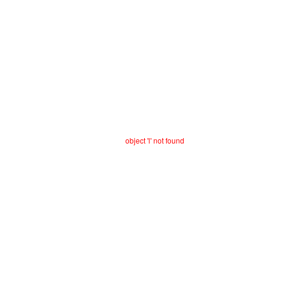
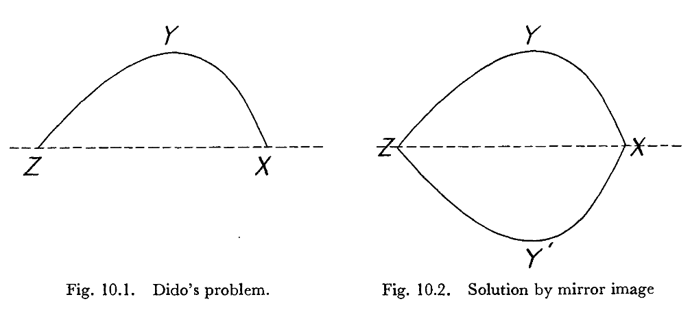

Lecture notes for Sel. Topics Calc. Several Variables.
Table of Contents
1 Some subsets of the Euclidean Space
We have defined for \(r>0\) the open ball centred at \(x_0\in \mathbb{R}^n\) as \[ B_r(x_0) = \{ x \in \mathbb{R}^n \, | \, |x - x_0| < r,\}\] and if \(x_0\) is the origin we simply write \(B_r\).
Given a set \(A\subset \mathbb{R}^n\), then we can distinguish three possibilities for any \(x\in \mathbb{R}^n\):
- \(x\) is an interior point of \(A\): There exists \(r>0\) such that \(B_r(x) \subset A\).
- \(x\) is an exterior point of \(A\): There exists \(r>0\) such that \(B_r(x) \subset \mathbb{R}^n \setminus A\).
- \(x\) is a boundary point of \(A\): For every \(r>0\) it holds \(B_r(x) \cap A \neq \emptyset\) and \(B_r(x)\cap (\mathbb{R}^n \setminus A)\neq \emptyset\)
Now we can also define certain basic sets in \(\mathbb{R}^n\):
- A set \(U\subset \mathbb{R}^n\) is called open if every \(x\in U\) is an interior point.
- A set \(F\subset \mathbb{R}^n\) is called closed if its complement \(\mathbb{R}^n\setminus F\) is open.
- A set \(A\subset \mathbb{R}^n\) is said to be bounded if there is a \(r_0>0\) such that \(A\subset B_{r_0}\).
- A set \(K\subset \mathbb{R}^n\) is called compact if it is closed and bounded.
2 Maps between \(\mathbb{R}^n\) and \(\mathbb{R}^m\).
In this section we will list definitions and establish some notation and terminology regarding the maps between to Euclidean spaces.
- A map \(f : \mathbb{R}^n \to \mathbb{R}^m\) is a rule which associates to each point \(x\in \mathbb{R}^n\) some point in \(\mathbb{R}^m\) denoted by \(f(x)\).
- If \(A\subset \mathbb{R}^n\) then \(f : A \to \mathbb{R}^m\) means that \(f\) is just defined for \(x\in A\) and we say that \(A\) is the domain of \(f\).
- If \(B \subset A\), we define the image of \(B\) under the map \(f\) as the set of all \(f(x)\in\mathbb{R}^m\) for \(x\in B\).
- If \(C \subset \mathbb{R}^m\) we define the inverse image of \(C\) under \(f\) as the subset of \(\mathbb{R}^n\) given by \(f^{-1}(C) = \{ x\in \mathbb{R}^n \,|\, f(x) \in C\}\).
- The notation \(f:A\to B\) always means that \(f(A)\subseteq B\).
- Whenever \(B\subseteq \mathbb{R}\) we called \(f\) a function.
- If \(f,g:\mathbb{R}^n \to \mathbb{R}\) are two functions then the functions \(f + g\), \(f\cdot g\) and \(f/g\) are defined pointwise as in the one-variable case.
- Let \(A\subseteq \mathbb{R}^n\) and \(B\subseteq\mathbb{R}^m\). If \(f:A\to \mathbb{R}^m\) and \(g: B\to \mathbb{R}^l\) the compostion \((g \circ f)\) is the function defined by \((g\circ f)(x) = g(f(x))\). Note that the domain of definition of the composition map is \(A\cap f^{-1}(B)\).
- A map \(f:A\to \mathbb{R}^m\) is said to be injective or one to one (1-1) if it holds that \(f(x) = f(y)\) if and only if \(x = y\).
- whenever \(f\) is injective we define its inverse \(f^{-1}: f(A) \to \mathbb{R}^n\) by associating \(f^{-1}(z)\) to the unique \(x\in A\) such that \(f(x)=z\).
- Any map \(f:A \to \mathbb{R}^m\) determines and it is determined by the so called component functions \(f_i:A\to \mathbb{R}\), \(i=1,2,\ldots,m\) by the equality \(f(x) = (f_1(x),f_2(x),\ldots, f_m(x))\).
- The identity map \(\mbox{id}:\mathbb{R}^n\to \mathbb{R}^n\), \(\mbox{id}(x) = x\).
- For \(1\leq i \leq n\), the projection on the \(i\) -th coordinate is the function \(\pi_i: \mathbb{R}^n \to \mathbb{R}\) such that \(\pi_i(x) = x_i\).
3 Limits and Continuity
As in the case of real analysis (or any metric space) we define the limit \[ \lim_{x \to a} f(x) = b,\] by requiring that for every \(\epsilon >0\) there is a number \(\delta >0\) such that \(|f(x) - b| < \epsilon\) for every \(x\) in the domain of \(f\) such that \(|x-a| < \delta\).
If \(f:A\to \mathbb{R}^m\) is such that \[\lim_{x\to a} f(x) = f(a),\] then we say that \(f\) is continuous at \(a\). If \(f\) is continuous at every \(a\in A\) then \(f\) is simply called continuous.
Continuity of a map can be determined in terms of open subsets. Here there is a list of basic properties
- A map \(f:\mathbb{R}^n\to\mathbb{R}^m\) is continuous if and only if for every open subset of \(U\subset\mathbb{R}^m\) then inverse image \(f^{-1}(U)\) is an open subset of \(\mathbb{R}^n\).
- If \(A\subset \mathbb{R}^n\), then a map \(f:A\to\mathbb{R}^m\) is continuous if and only if for every open subset of \(U\subset\mathbb{R}^m\) there is an open set \(V\in\mathbb{R}^n\) such that \(f^{-1}(U)= V \cap A\).
- If \(K\subset \mathbb{R}^n\) is compact and \(f: K \to \mathbb{R}^m\) is continuous then the direct image \(f(K)\) is a compact subset of \(\mathbb{R}^m\).
- For \(f:\mathbb{R}^n\to \mathbb{R}^m\), then \(\lim_{x\to a}f(x) = b\) if and only if \(\lim_{x\to a}f_i(x) = b_i\) for \(i= 1,2,\ldots m\).
- The map \(f:\mathbb{R}^n \to \mathbb{R}^m\) is continuous if and only if \(f_i:\mathbb{R}^n\to\mathbb{R}\) are continuous, for all \(i=1,2,\ldots m\).
4 Derivatives
A map \(f:\mathbb{R}^n \to \mathbb{R}^m\) is differentiable at \(a\in \mathbb{R}^n\) if there is a linear transformation \(Df_a: \mathbb{R}^n \to \mathbb{R}^m\) such that \[ \lim_{h\to 0} \frac{|f(a + h) - f(a) - Df_a(h)|}{|h|} = 0. \]
In order to understand this linear transformation we introduce partial derivatives for a function \(f: \mathbb{R}^n \to \mathbb{R}\) at \(a \in \mathbb{R}^n\) as the limit \[ \frac{\partial f(a)}{\partial x_i} = \lim_{h\to 0} \frac{f(a_1,a_2,\ldots, a_i + h, \ldots, a_n) - f(a_1,\ldots, a_n)}{h}.\]
Then it is possible to prove that for any map \(f:\mathbb{R}^n \to \mathbb{R}^m\), the matrix representing the linear transformation \(Df_a\) is \[ (Df_a) = \left( \begin{array}{ccc} \frac{\partial f_1(a)}{\partial x_1} & \cdots & \frac{\partial f_1(a)}{\partial x_n}\\ \vdots & \vdots & \vdots \\ \frac{\partial f_m(a)}{\partial x_1} & \cdots & \frac{\partial f_m(a)}{\partial x_n}\\ \end{array} \right). \]
Remark Note that \((Df_a)\) is a matrix with \(m\) rows and \(n\) columns.
The Chain rule: Let \(f:\mathbb{R}^n \to \mathbb{R}^m\) and \(g: \mathbb{R}^m \to \mathbb{R}^l\) such that the composition \((g\circ f) : \mathbb{R}^n \to \mathbb{R}^l\) is well defined. If \(f\) and \(g\) are differentiable then for any \(a\in \mathbb{R}^n\) we have \[D(g\circ f)_a = Dg_{f(a)} \circ Df_a. \]
Second order partial derivatives will be denoted by \[\frac{ \partial^2 f}{\partial x_i^2} = \frac{\partial}{\partial x_i}\left( \frac{\partial f}{\partial x_i}\right) \] \[\frac{ \partial^2 f}{\partial x_j \partial x_i} = \frac{\partial}{\partial x_j}\left( \frac{\partial f}{\partial x_i}\right) \]
If all mixed second order partial derivatives are continuous at a point or on a set, \(f\) is called a \(C^2\) function at that point (or on that set); in this case, the order of the partial derivatives can be interchanged \[ \frac{\partial^2 f}{\partial x_j \partial x_i} = \frac{\partial^2 f}{\partial x_i \partial x_j}\]
Example:
\[{\displaystyle f(x,\,y)={\begin{cases}{\frac {xy\left(x^{2}-y^{2}\right)}{x^{2}+y^{2}}}&{\mbox{ for }}(x,\,y)\neq (0,\,0),\\0&{\mbox{ for }}(x,\,y)=(0,\,0).\end{cases}}}\]
5 Differential Geometry of Curves
5.1 Curves in \(\mathbb{R}^3\)
A parameterised differentiable curve is a map \(\alpha: I \to \mathbb{R}^3\), where \(I= (a,b)\) is an open interval of the real line.
Remarks. The curve \(\alpha\) is defined by three real functions: \[ \alpha(t) = \left(x(t), y(t), z(t) \right). \] The variable \(t\) is called the parameter of the curve. The interval \(I\) could also be the real line \(\mathbb{R}\). The trace of the curve is the image \(\alpha(I) \subset \mathbb{R}^3\).
For the derivative of the map \(\alpha\) with respect to the parameter \(t\) at any \(t_0\in I\), we may use one of the several available notations
- \(\left.\dfrac{d\alpha}{dt}\right|_{t=t_0}\).
- \(\alpha'(t_0)\)
- \(\dot\alpha(t_0)\).
and we have \[ \alpha'(t) = (x'(t), y'(t), z'(t)) . \]
This is called the velocity vector or the tangent vector of the curve \(\alpha\) at \(t\).
If \(\alpha,\beta:I\to \mathbb{R}^3\) are two differentiable curves, then \(\alpha(t) \bullet \beta(t)\) is a differentiable function and \[\frac{d}{dt} \left( \alpha(t)\bullet \beta(t) \right) = \alpha'(t)\bullet \beta(t) + \alpha(t)\bullet \beta'(t). \]
If \(\alpha,\beta:I\to \mathbb{R}^3\) are two differentiable curves, then \(\alpha(t) \times \beta(t)\) is a differentiable map and \[\frac{d}{dt} \left( \alpha(t)\times \beta(t) \right) = \alpha'(t)\times \beta(t) + \alpha(t)\times \beta'(t). \]
Let \(\alpha:I \to \mathbb{R}^3\) be a parameterised differentiable curve.
- A singular point of \(\alpha\) is any \(t\in I\) such that \(\alpha'(t) = 0\).
- If \(\alpha'(t) \neq 0\) for every \(t\in I\), then we say that \(\alpha\) is a regular curve.
Let \(\alpha : I\to \mathbb{R}^3\) be a parameterised regular curve. Show that \(|\alpha(t)|\) is a non-zero constant if and only if \(\alpha(t)\) is orthogonal to \(\alpha'(t)\) for all \(t\in I\).
It follows easily from last proposition and \[ 0 < c^2 = |\alpha|^2 \Leftrightarrow 0 = \frac{d}{dt} |\alpha(t)|^2 = 2 \alpha(t)\bullet \alpha'(t) \Leftrightarrow \alpha(t) \perp \alpha'(t).\]
Given \(t \in I\), the arc-length of a regular parameterised curve \(\alpha: I \to \mathbb{R}^3\) from the point \(t_0\) is \[ s(t) = \int_{t_0}^{t} |\alpha'(r)| dr. \]
If the parameter \(t\) of a curve \(\alpha\) is already the arc-length measured from some point, we say that \(\alpha\) is parameterised by arc length and in this case we usually write \(\alpha(s)\).
The arc-length \(s(t)\) is a differentiable function. If in addition the curve \(\alpha\) is regular, i.e., \(\alpha'(t) \neq 0\) for all \(t \in I\), it also holds that \(s'(t) >0\), hence \(s(t)\) has a continuous inverse \(s^{-1}(r)\).
Recall
First Fundamental theorem of Calculus. Let \(f\) be a continuous real-valued function defined on a closed interval \([a, b]\). Let \(F\) be the function defined, for all \(x \in [a, b]\), by \[ F(x)=\int _{a}^{x}\!f(t)\,dt.\] Then \(F\) is uniformly continuous on \([a, b]\) and differentiable on the open interval \((a, b)\), and \[ F'(x)=f(x)\,, \mbox{for all } x \in (a, b). \]
For \([t_0,t]\subset I\), the map \(\alpha: [t_0,t] \to \mathbb{R}^3\) is smooth (differentiable) which implies that \(\alpha': [t_0,t] \to \mathbb{R}^3\) is continuous. Since \(|\cdot|:\mathbb{R}^3 \to \mathbb{R}\) is also continuous, the composition \(t \to |\alpha'(t)|\) is also continuous. Then by the Fundamental Theorem of Calculus, \(s(t)\) is differentiable. For the second part, note that since \(\alpha'(t) \neq 0\) we have \[ \frac{ds(t)}{dt} = |\alpha'(t)| >0 .\] Finally recall that any a continuous (differentiable) strictly monotone function defined on an interval has an inverse which is also a continuous (differentiable) function.
The curve \(\alpha\) is parameterised by arc-length if and only if its velocity vector has constant length equal to 1.
(\(\Rightarrow\)) If the parameter \(t = s(t)\), then we have (form the proof the previous proposition) \[ 1 = \frac{ds}{dt} = |\alpha'(t)|. \] (\(\Leftarrow\)) Assuming that \(|\alpha'(t)| =1\) for all \(t \in I\), it follows that \[ s(t) = \int_{t_0}^{t}|\alpha'(r)|dr = \int_{t_0}^{t}dr = t - t_0,\] then \(t\) is the arc-length of \(\alpha\) measured from some point.
Let \(\alpha : I \to \mathbb{R}^3\) be a parameterised curve. We call the curve \(\beta : J \to \mathbb{R}^3\) a reparameterisation of \(\alpha\), is there is a differentiable bijective function \(u: J\to I\) with inverse \(u^{-1}:I\to J\) also differentiable and \[ \beta (r) = (\alpha \circ u) (r), \mbox{ for all }\, r\in J. \]
Given a regular parameterised curve \(\alpha : I \to \mathbb{R}^3\), it is possible to obtain a curve \(\beta : J \to \mathbb{R}^3\) parameterised by arc-length which has the same trace as \(\alpha\).
Let \(s(t) = \int_{t_0}^{t} |\alpha'(r)|dr\), with \(t_0,t\in I\). Since \(\alpha\) is regular we already noticed that \(\frac{ds}{dt} = |\alpha'(t)| >0\) and then the function \(s(t)\) has a differentiable inverse \(g(s)\), where \(s\in s(I) = J\). Moreover from the chain rule we have \[ t = g(s(t)) \Rightarrow 1 = \frac{d g(s)}{ds} \frac{ds(t)}{dt} = \frac{d g(s)}{ds} |\alpha'(t)|.\]
Now, set \(\beta(s) = (\alpha \circ g) (s)\). Since clearly \(\beta(J) = \alpha(I)\), they have the same trace. Note now that by the chain rule \[ \left|\beta'(s)\right| = \left|\frac{d\beta (s)}{ds} \right| = \left| \frac{d\alpha (g(s))}{dt} \frac{d g(s)}{ds} \right| = \left| \frac{d\alpha (t)}{dt}\right|\, \left| \frac{dg(s)}{ds} \right| = \left|\alpha'(t)\right| \frac{1}{|\alpha'(t)|} = 1. \] Then, from the previous proposition, \(\beta\) is parameterised by arc-length.
Remark The curve \(\beta\) constructed in the last proposition is called an arc-length re-parameterisation of \(\alpha\) by arc-length, or equivalently, a unit speed reparametersia tion.
Given a curve \(\alpha\) parameterised by arc-length \(s\in (a,b)\), the curve \(\beta\) defined in the interval \((-b, -a)\), \(\beta(-s) = \alpha(s)\) is said to be a change of orientation of \(\alpha\).
5.2 Examples.
- Find the trace and the tangent vectors of the following curves
- \(\alpha(t) = (a \cos t, a \sin t, b\,t)\).
- \(\alpha(t) = ( t^3, t^2)\).
- \(\alpha(t) = (t^3 -4t, t^2 -4)\).
- \(\alpha(t) = (t, |t|)\).
- \(\alpha(t) = (\cos t, \sin t)\).
- \(\alpha(t) = (\cos 2t, \sin 2t)\).
- Find the arc-length parameterisation of the following curves if possible:
- \(\alpha(t) = (\cos 2t, \sin 2t)\), for \(0 < t < 2\pi\)
- \(\alpha(t) = (t, t^2, t^3)\), for \(-\infty < t < \infty\).
TT <- seq(-10,10,length.out=100) AA <- 1 BB <- 1 plot(TT^3,TT^2,type=l)

5.3 The Local theory of Curves
Let \(\alpha : I \to \mathbb{R}^3\) be a curve parameterised by arc-length. The curvature of \(\alpha\) at \(s\) is defined by \[ \kappa(s) = |\alpha''(s)| . \]
Note that if \(\alpha(s) = As + B\), with \(A,B\in \mathbb{R}^3\) fixed vectors, and \(|A|=1\). Then \(\kappa(s) = 0\).
If we start by assuming that \(\kappa(s) = 0\), then \(\alpha''(s) = 0\) for all \(s\in I\). Then by integrating each of the coordinate functions, and after reparamaterising by arch length if necessary, one can write \(\alpha(s) = As + B\).
This makes sense with our intuition that a straight line has no curvature.
Notice that when \(\alpha\) is parameterised by arc-length, the length of the tangent vector \(|\alpha'(s)|=1\) remains constant. The curvature then measures the rate of change of the angle between tangent vectors at each point on the curve \(\alpha(s)\).
For \(\alpha(s)\), the vector \(\alpha''(s)\) and the curvature \(\kappa(s)\) remain invariant (unchanged) under a change of orientation.
Let \(\beta(-s) = \alpha(s)\) a change of orientation. Put \(r = -s\), then \(ds/dr = -1\), and hence by the chain rule \[ \frac{d\beta(r)}{dr} = \frac{d\alpha(s)}{dr} = \frac{d\alpha}{ds}\frac{ds}{dr} = -\frac{d\alpha}{ds}. \] Differentiating a second time we get
\[ \beta''(r) = \frac{d^2\beta(r)}{dr^2} = -\frac{d}{dr}\frac{d\alpha}{ds} = -\frac{d^2\alpha}{ds^2} \frac{ds}{dr} = \frac{d^2\alpha}{ds^2} = \alpha''(s), \] as we wished to show.
Important In what follows it will be essential to assume that the curves we will be working with are parameterised by arc-length, regular and such that \(\alpha'(s)\) have no singular points (\(\alpha''(s)\neq 0\)).
At points where \(\kappa(s) \neq 0\), we define the following unit vectors
- The tangent vector at s: \(T(s) = \alpha'(s)\).
- The (principal) normal vector at s: \(N(s) = \frac{1}{\kappa(s)} \alpha''(s)\)
- The binormal vector at s: \(B(s) = T(s) \times N(s)\).
For a curve \(\alpha(s)\) there is a function \(\tau(s)\) called the torsion of \(\alpha\) at \(s\), such that
- \(T'(s) = \kappa(s) N(s)\).
- \(N'(s) = -\kappa(s) T(s) - \tau(s) B(s)\).
- \(B'(s) = \tau(s) N(s)\) .
This are called the Frenet's equations.
The evaluation at \(s\) will be written when necessary.
We have \(T' = \kappa\,N\) holds by definition.
Note that \(B = T \times N\) is also a unit vector. Then \(B' \perp B\). By properties of the cross product \[ B' = T' \times N + T \times N' = T \times N',\] where the first term vanishes because \(T'\) and \(N\) are linearly dependent.
From the last identity we can say that \(B'\) is perpendicular to \(T\), moreover, \(B'\) must be a multiple of \(N\). Then at each point we can write \[ B'(s) = \tau(s) N(s). \]
Since at each value of the parameter \(s\) we have the basis \(\{ T, N, B\}\), we can write \(N = B \times T\) and it follows \[ N' = B' \times T + B \times T' = \tau\, N \times T + B \times \kappa \, N = - \tau \, B - \kappa\, T \]
Given differentiable functions \(\kappa(s)>0\) and \(\tau(s)\) defined in an open interval \(s\in I\), there exists a regular parameterised curve \(\alpha : I\to \mathbb{R}^3\) such that
- \(s\) is the arch length of \(\alpha\).
- \(\kappa(s)\) is the curvature.
- \(\tau(s)\) is the torsion.
Additionally, if \(\bar{\alpha}\) is another curve satisfying the same conditions, then it differs from \(\alpha\) by a rigid motion, i.e. there is an orthogonal linear map \(A:\mathbb{R}^3 \to \mathbb{R}^3\) with positive determinant, and a vector \(C\in \mathbb{R}^3\) such that \[\bar{\alpha} = A\alpha + C \]
Proof of Existence.
Note first that the Frenet's equations define a system of differential equations in \(I\times \mathbb{R}^9\). By letting \(T = (x_1,x_2,x_3),N = (x_4,x_5,x_6),B = (x_7,x_8,x_9)\) and linear functions \(f_i = f_i(s,x_1,\ldots, x_9)\) in \(x_i's\) with coefficients depending on \(s\). \[ \left\{ \begin{array}{ccc} \frac{dx_1}{dt} & = & f_1(s,x_1,\ldots,x_9)\\ \vdots & \vdots & \vdots \\ \frac{dx_9}{dt} & = & f_9(s,x_1,\ldots,x_9) \end{array} \right. \]
A theorem of existence and uniqueness holds in the following form. Given initial conditions \(s_0\in I\), \(x_{1_0}, \ldots x_{9_0}\), there exists an open interval \(J\subset I\) containing \(s_0\), and a unique differentiable map \(\varphi : J \to \mathbb{R}^9\) with \[ \varphi(s_0) = (x_{1_0}, \ldots x_{9_0}), \quad \mbox{and} \quad \varphi'(s) = (f_1,\ldots f_9), \] where the \(f_i's\) are defined in \((s,\varphi(s)) \in J \times \mathbb{R}^9\). And moreover, for linear systems \(J = I\).
In other words, applying the theorem of existence and uniqueness for linear systems of linear equations we can prove that given a positively oriented set of orthonornal vectors \(\{T_0,N_0,B_0\}\) in \(\mathbb{R}^3\) and a value \(s_0\in I\), there is a family of vectors \(\{ T(s) , N(s), B(s) \}\), \(s\in I\) with \(T(s_0) = T_0, N(s_0) = N_0, B(s_0) = B_0\).
The family thus obtained \(\{T(s), N(s), B(s) \}\) remains orthonormal for every \(s\in I\). To show this we use again the Frenet's equations in combination with the inner product. For more clarity we write \(A\bullet B = \langle A, B \rangle\).
\begin{equation} \begin{array}{rcl} \frac{d}{ds}\langle T,N\rangle & = & \kappa \langle N, N \rangle - \kappa \langle T, T, \rangle - \tau \langle T, B\rangle\\ \frac{d}{ds}\langle T,B\rangle & = & \kappa \langle N, B \rangle + \tau \langle T, N\rangle\\ \frac{d}{ds}\langle N,B\rangle & = & -\kappa \langle T, B \rangle - \tau \langle B, B, \rangle + \tau \langle N, N\rangle\\ \frac{d}{ds}\langle T,T\rangle & = & 2\kappa \langle T, N \rangle \\ \frac{d}{ds}\langle N,N\rangle & = & -2\kappa \langle N, T \rangle - 2 \tau \langle N, B\rangle\\ \frac{d}{ds}\langle B,B\rangle & = & 2 \tau \langle B, N\rangle \end{array} \end{equation}One can check that a solution of the above system of equation is
\begin{equation} \begin{split} y_1 = \langle T, N \rangle \equiv 0, \quad y_1 (s_0)= 0\\ y_2 = \langle B, B \rangle \equiv 0, \quad y_2 (s_0)= 0 \\ y_3 = \langle N, B \rangle \equiv 0, \quad y_3 (s_0)= 0 \\ y_4 = \langle T, T \rangle \equiv 1, \quad y_4 (s_0)= 1 \\ y_5 = \langle N, N \rangle \equiv 1, \quad y_5 (s_0)= 1 \\ y_6 = \langle B, B \rangle \equiv 1, \quad y_6 (s_0)= 1 \end{split} \end{equation}Then by the uniqueness part we conclude that the set \(\{ T(s), N(s), B(s) \}\) remains orthonormal for every \(s\in I\).
Now, integrating each component of the vector \(T(s)\) we define the curve \[ \alpha(s) = \int T(r) dr. \]
Now, \(\alpha'(s) = T(s)\), and since \(T\) is a unit vector, \(\alpha\) is a unit speed curve and \(s\) is its arc-length. By Frenet's equations, \(T' = \kappa N\), and since \(N\) is a unit vector, \(\kappa\) is the curvature of \(\alpha\), and \(N\) is its principal normal. Since \(B\) is a unit normal perpendicular to \(T\) and \(N\), there is a smooth function \(c(s)\) such that \(B = c T\times N\), and hence \(c(s)\) must be \(1\) or \(-1\) for all \(s\). Using the initial values condition we conclude that \(c(s) = 1\) for all \(s\). Then \(B\) is the binormal of \(\alpha\) and \(\tau\) its torsion.
Proof of uniqueness.
First recall that a linear transformation \(A: \mathbb{R}^3 \to \mathbb{R}^3\) is called orthogonal if it preserves the inner product: \[ \langle Ax, Ay \rangle = \langle x, y \rangle,\quad x,y\in\mathbb{R}^3. \] And the corresponding matrix is such that \(\det(A) = \pm 1\).
Now we show that the arc-length, the curvature and the torsion are invariant under rigid motions. Let \(\alpha:I\to\mathbb{R}^3\) be a differentiable curve and \(M(x) = Ax + C\) a rigid motion. Then \(M \circ \alpha : I \to \mathbb{R}^3\) defines another curve, \(\bar{\alpha} (t) = A\alpha(t) + C\). Then \[ \bar{\alpha}'(t) = A\alpha'(t), \] and since it preserves inner product we have \[ |\alpha'(t)|^2 = \langle \alpha'(t), \alpha'(t) \rangle = \langle A\alpha'(t), A\alpha'(t)\rangle = \langle \bar{\alpha}'(t) , \bar{\alpha}'(t) \rangle = |\bar{\alpha}'(t)|^2. \] From the last observation we can verify that the arc-length is invariant under rigid transformations: \[ s(t) = \int_{t_0}^{t} |\alpha'(r)| dr = \int_{t_0}^{t} |\bar{\alpha}'(r)| dr. \] Then if \(\alpha\) is parameterised by arc-length, so is \(\bar{\alpha}\). Now, \(\alpha'' = \kappa N\), and under the rigid motion we have \(\bar{\alpha}'' = A\alpha''\). \[ \kappa^2 = \langle \alpha'',\alpha''\rangle = \langle A\alpha'',A\alpha''\rangle, \] which implies that the curvature \(\kappa\) is invariant under rigid motions. Similar argument shows that the torsion \(\tau\) is also invariant under rigid motions.
Suppose now that there are two curves \(\alpha\) and \(\bar{\alpha}\) such that for \(s\in I\):
\begin{equation*} \begin{split} \kappa(s) = \bar{\kappa}(s)\\ \tau(s) = \bar{\tau}(s) \end{split} \end{equation*}Lets choose an initial condition. For \(s_0\in I\) let \(T_0,N_0,B_0\) the Frenet trihedron of the curve at \(\alpha(s_0)\) and \(\bar{T}_0,\bar{N}_0,\bar{B}_0\) the corresponding trihedron at \(\bar{\alpha}(s_0)\). By a proper translation and rotation, we can assume \(\alpha(s_0) = \bar{\alpha}(s_0), T_0 = \bar{T}_0, N_0 = \bar{N}_0\) and \(B_0 = \bar{B}_0\). Each curve satisfies the Frenet's equations, then we have the following differential equaitons
\begin{equation*} \begin{array}{ll} T'(s) = \kappa(s) N(s). & \bar{T}'(s) = \bar{\kappa}(s) \bar{N}(s).\\ N'(s) = -\kappa(s) T(s) - \tau(s) B(s). & \bar{N}'(s) = -\bar{\kappa}(s) \bar{T}(s) - \bar{\tau}(s) \bar{B}(s).\\ B'(s) = \tau(s) N(s) . & \bar{B}'(s) = \bar{\tau}(s) \bar{N}(s) . \end{array} \end{equation*}Remeber that we have set the initial conditions \(\alpha(s_0) = \bar{\alpha}(s_0), T_0 = \bar{T}_0, N_0 = \bar{N}_0\) and \(B_0 = \bar{B}_0\). Now, we want to show that \(|T(s) - \bar{T}(s)|\) vanishes for all \(s\in I\), and similar for \(|N(s) - \bar{N}(s)|\) and \(|B(s) - \bar{B}(s)|\). Note that
\begin{align*} \frac{1}{2}\frac{d}{ds} |T(s) - \bar{T}(s)|^2 & = \frac{1}{s}\frac{d}{ds} \langle T(s) - \bar{T}(s), T(s) - \bar{T}(s) \rangle \\ & = \langle T(s) - \bar{T}(s), T'(s) - \bar{T}'(s) \rangle \\ & = \kappa(s) \langle T(s) - \bar{T}(s), N(s) - \bar{N}(s) \rangle. \end{align*}In a similar way one shows that
\begin{align*} \frac{1}{2}\frac{d}{ds} |B(s) - \bar{B}(s)|^2 &= \tau(s) \langle B(s) - \bar{B}(s), N(s) - \bar{N}(s) \rangle, \\ \frac{1}{2}\frac{d}{ds} |N(s) - \bar{N}(s)|^2 &= -\kappa(s) \langle N(s) - \bar{N}(s), T(s) - \bar{T}(s) \rangle -\tau(s) \langle N(s) - \bar{N}(s), B(s) - \bar{B}(s) \rangle. \end{align*}Then the remarkable observation is that for any \(s\in I\) \[ \frac{1}{2}\frac{d}{ds}\left[ |T(s) - \bar{T}(s)|^2 + |B(s) - \bar{B}(s)|^2 + |N(s) - \bar{N}(s)|^2 \right] = 0, \] then the quantity is the constant \(0\). This shows that \(T(s) = \bar{T}(s), N(s) = \bar{N}(s)\) and \(B(s) = \bar{B}(s)\). Finally form \[ \frac{d}{ds} \alpha(s) = T(s) = \bar{T}(s) = \frac{d}{ds} \bar{\alpha}(s), \] it also follows that \((\alpha - \bar{\alpha})' \equiv 0\). Then \(\alpha(s) = \bar{\alpha}(s) + c\), for a constant vector \(c\in \mathbb{R}^3\). Bus since form our initial conditions we are asuming \(\alpha(s_0) = \bar{\alpha}(s_0)\) then \(c=0\) and we conclude \(\alpha(s) = \bar{\alpha}(s)\) for all \(s\in I\).
Let \(\alpha: I \to \mathbb{R}^3\) be a regular parameterised curve not necessarily by arc-length. Let \(s(t)\) the arc-length and denote by \(t = t(s)\) be the inverse of the function \(s\). Then
- Show that \[\frac{dt}{ds} = \frac{1}{|\alpha'|},\] and \[\frac{d^2t}{ds^2} = - \frac{\alpha'\bullet \alpha''}{|\alpha'|^4} \]
- The curvature of \(\alpha\) at \(t\in I\) is \[ \kappa(t) = \frac{|\alpha' \times \alpha''|}{|\alpha'|^3}. \]
- The torsion of \(\alpha\) at \(t \in I\) is \[ \tau(t) = -\frac{(\alpha' \times \alpha'')\bullet \alpha'''}{|\alpha' \times \alpha ''|^2} \]
The solution is left as an exercise. As a hint, here some of the identities that you may find on the way.
\begin{equation} \begin{split} T &= \alpha' \frac{dt}{ds} = \frac{\alpha'}{|\alpha'|}\\ \frac{dT}{ds}&=\frac{\alpha''}{|\alpha'|^2} - \alpha' \frac{\alpha'\cdot\alpha''}{|\alpha'|^4}\\ \frac{d^2T}{ds^2}&= \frac{\alpha'''}{|\alpha|^3} - 3\alpha''\frac{\alpha'\cdot\alpha''}{|\alpha|^5} + \alpha'\frac{d^3t}{ds^3}. \end{split} \end{equation} \begin{equation} T = \frac{\alpha'}{|\alpha'|}, \quad N = \frac{1}{k}T' , \quad B = T\times N \end{equation}Remark We were mainly studying curves in \(\mathbb{R}^3\) where the curvature was defined as a positive number \(\kappa >0\). In the case of curves on the plane \(\mathbb{R}^2\), it is possible to give a slightly different definition of curvature, where there is a sign associated to it. This is done by observing that, if a curve \(\alpha : I \to \mathbb{R}^2\) is parameterised by arc-length, and \(T = \alpha'(s)\), is the tangent vector, then there are only two possible unit vectors perpendicular to \(T\). One can then define the sign of the normal to be positive if \(N\) is obtained by rotating the tangen vector \(T\) anti-clockwise by \(\pi/2\).
5.4 Global Theory of Curves
Now we will study some global properties of Curves. Two classic results are: the isoperimetric inequality and the Four Vertex Problem.
In this course we will only focus on the former one. We will state the problem with curves and in the next section we will generalise the questions to higher dimensions.
5.5 The Isoperimetric Inequality
The isoperimetric inequality is still a thriving topic in modern mathematics.
Let \(C\) be a simple closed curve in \(\mathbb{R}^2\) with length \(L\), and let \(A\) be the area of the region bounded by \(C\). Then we have \[ L^2 - 4\pi A \geq 0,\] and the equaltiy holds if and only if \(C\) is a circle.
Last statement is related to the following questions:
- Among all closed curves of length \(L\) in the plane, how large can the enclosed area be?
- Which curves enclose the largest possible area?
- Among all regions in the plane with prescribed area \(A\), at least how long should the perimeter be?
- Which figures realise the least perimeter?
The problem was known to the Greeks and they already knew that the equality was realised by the circle, but a rigorous proof took long time to appear. Only until 1870, K. Weierstrass gave examples of similar type of questions where a solution doesn't exists. In order to show the solvability of the isoperimetric problem he used arguments of minimising and maximising certain integral functional, developing then what we know as Calculus of Variations.
From Polya's Mathematics and plausible reasoning:
Dido, the fugitive daughter of a Tyrian king, arrived after many adventures at the coast of Africa where she became later the founder of Carthage and its first legendary queen. Dido started by purchasing, from the natives a piece of land on the seashore "not larger than what an oxhide can surround." She cut the oxhide into fine narrow strips of which she made a very long string. And then Dido faced a geometric problem: what shape of land should she surround with her string of given length in order to obtain the maximum area?

Figure 2: Dido's problem along the shore
The following observation is a direct application of the isoperimetric inequality based on one of the many Jakob Steiner's ideas
The area of a polygon inscribed in a circle is greater than the area of any other polygon with the same sides.

Figure 3: Steiner's Method
A nice collection of different proofs can be found in this article: http://www.math.utah.edu/~treiberg/isoperim/isop.pdf do Carmo's book on Curves and Surfaces presents Schmidt's proof of the isoperimetric inequality. Another nice resource was posted in moodle, where a solution using Fourier series is discussed.
6 The Isoperimetric Inequality in \(\mathbb{R}^n\).
The proof that we will give is due to X. Cabré which involves the solution of a particular Partial Differential Equation, and the Moving Plane technique developed by Alexandrov, to obtain the result.
Let \(\omega_n\) denote the volume of the unit ball in \(\mathbb{R}^n\). If \(\Omega \subset\mathbb{R}^n\) is a bounded domain (open and connected), and \(\partial \Omega\) denotes its boundary, then \[ |\partial\Omega| \geq n \, \omega_n^{\frac{1}{n}} |\Omega|^{1-\frac{1}{n}}, \] and the equality is attained only when \(\partial \Omega\) is the sphere.
Remark The notation \(|\partial \Omega|\) is used for the measure (area/volume) of the \((n-1)\) - dimensional surface, and similarly \(|\Omega|\) the volume of the \(n\) - dimensional domain.
Exercise 1. Show that \[ \omega_n = \frac{\pi^{\frac{n}{2}}}{\Gamma(\frac{n}{2} + 1)}, \] where the Gamma function is given by \[ \Gamma(s) = \int_{0}^{\infty} e^{-t}t^{s-1}dt. \]